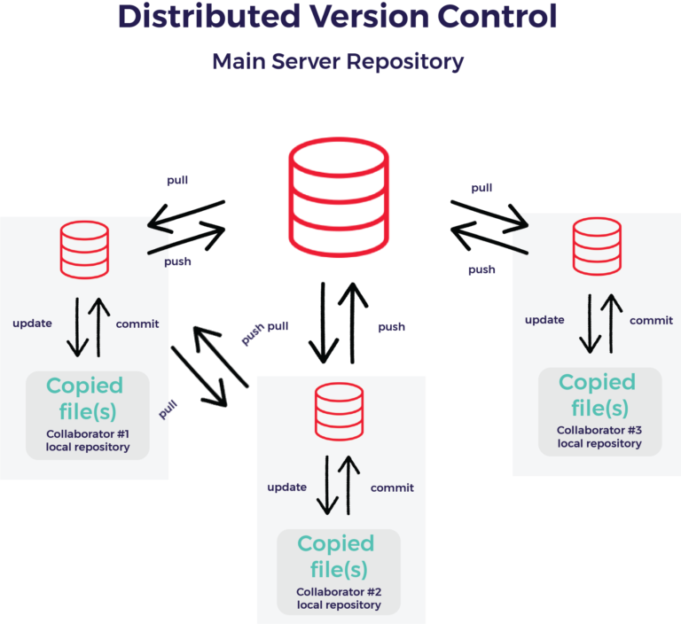

Bienvenue !
Pierre-Julien VILLOUD

Introduction
Dans ce cours, nous allons parler de système de gestion de version de manière générale, et plus précisément de Git, qui est le plus répandu aujourd'hui.
Système centralisé vs Système décentralisé
Le système centralisé (CVS, SVN) oblige à avoir un serveur principal tout le temps accessible tandis que le système décentralisé (Git, Mercurial...) permet de travailler sans, même si un serveur central permet tout de même la mise en commun du code.


De nos jours, ce sont les systèmes décentralisés qui sont le plus souvent utilisés (du moins pour les nouveaux projets) car plus souples et avec des fonctionnalités plus poussées.
Gestion des conflits
Tout va bien lorsqu'on travaille sur des fichiers différents. Cependant, il peut y avoir des conflits lorsque plusieurs personnes modifie le même fichier, et notamment la même ligne.

Il est alors nécessaire de résoudre manuellement le conflit lorsque Git n'a pas réussi à le faire automatiquement. Il faut être particulièrement attentif lors de la résolution de conflit afin de prendre en compte toutes les modifications et ne pas supprimer celles des autres personnes.
Les branches
Afin de systématiquement devoir récupérer les changements des autres (et régler les potentiels conflits) pour pousser les siens, on peut utiliser le mécanisme des branches. Cela permet également de pouvoir pousser son code même s'il n'est pas terminé.

A la création d'un repository, une seule branche existe, la branche
master. Ce mécanisme de branches permet également de gérer le développement parallèle de plusieurs fonctionnalités, ou la maintenance des différentes versions d'un logiciel. Pour approfondir voir les différents workflows.
Les Pull Request
Tout le monde a mergé sa branche dans
master sans aucune étape de validation. Ce processus est plutôt dangereux ! Au lieu de ça, on préférera utiliser le principe des Pull Requests que l'on peut créer sur Github et qui permet de faire des revues de codes avant d'effectivement merger son code dans master.

Créer une branche
minibio-votrenom à partir de master et la pousser sur le repository central. Créer une Pull Request de cette branche vers master.
Créer un fichier
minibio-votrenom.txt dans laquelle vous écrirez votre minibio. Commiter et pusher votre fichier. Voir que votre Pull Request a été mise à jour. Affectez-la à votre voisin pour qu'il en fasse la revue et la commente. Puis la merger dans master.